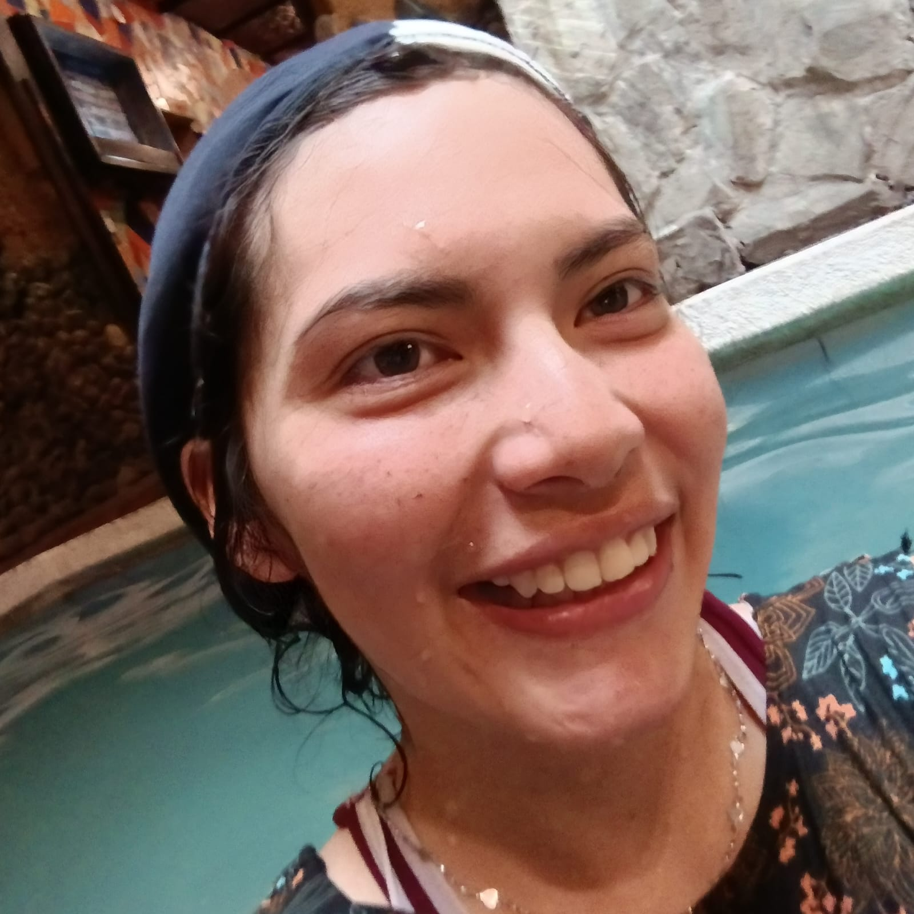
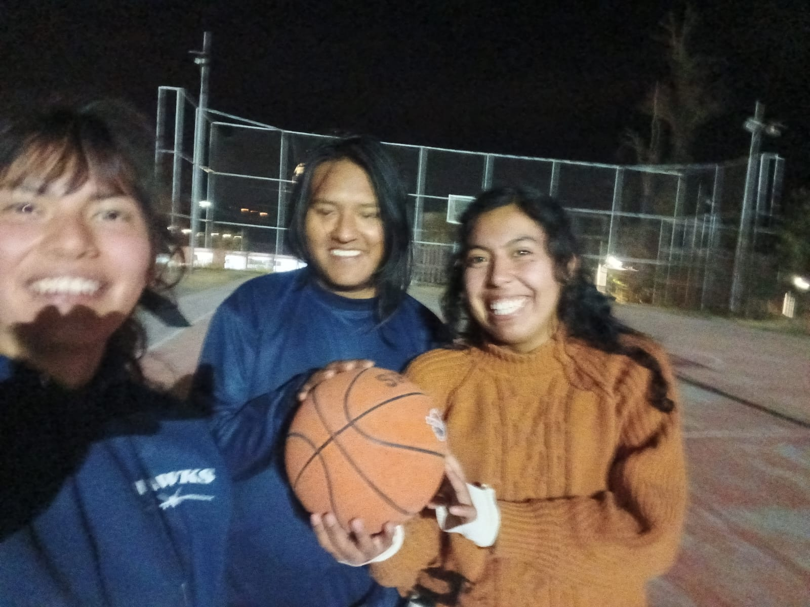

On vacation, I started swimming. At the beginning of learning this sport, it was really complicated because I got tired really fast, and I also couldn't breathe underwater. Luckily, after 3 weeks of constant practice, I finally did it haha. I hope that on my next vacation I can continue swimming, but for now I just go when I can on Saturdays.
Sports

In high school, I used to play basketball, but I stopped playing because of the pandemic. At the very beginning of this semester, I decided to start practicing basketball again with my friends, so we often play at night on the university basketball courts.

Other Activities
- Three years ago I used to practice Japanese xd
- I really like hanging out with my friends because I don't like staying alone at home.